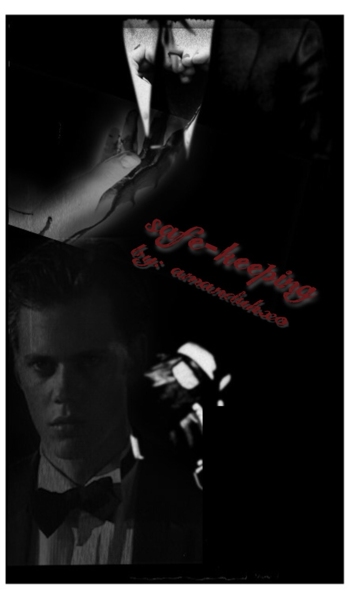
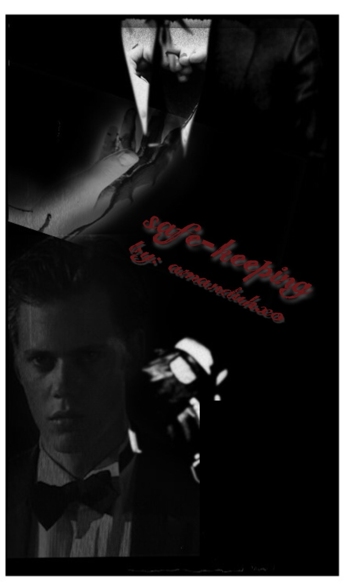

Amanda Schwarcz
Currently enrolled at University of California, Riverside as a Creative Writing major, I maintain an average 3.4 GPA while taking a few honors classes. I am more than willing to learn new skills that could be useful in a type of industry and job environment. I have taken several classes amongst my major including beginning workshops for poetry and fiction. I attend office hours with each of my professors that teach within my major. I am more than willing to expand my writing skills into other genres such as non-fiction. I have worked in retail and fast food outside my academic life. I have worked for Sam’s Club as a self-checkout attendant and cashier. I also was tasked with organizing the lost, replaced and left items back into their designated spots after hours. I worked there for three months. I only left for lack of empathy after my grandmother passed away who helped raise me. I have since then worked at the same fast food restaurant, Portillo’s. There, I have been tasked with being a drive-thru cashier as well as drive-thru attendant who helps move the bags of food from the line to the customers. I also work as an indoor cashier so I have a great interaction task of taking orders while also engaging with the customers and helping the line with any type of order questions they may have. I also handle money and I’m required to count down a cash drawer at the end of each of my shifts. I have worked there for almost eight months as of November 22, 2021.
I want to hopefully attend graduate school somewhere other than California but I will just be happy to attend graduate school. My goal is to have an internship in graduate school or next year as a senior. I would love to someday be an author who writes horror/psychological stories, a professor of Creative Writing, a teacher of English in high school, or be an editor or copywriter. I personally I would be a good employee as I have well-developed writing skills, reading level, a great understanding of the English language, an intermediate level of skill in German, a basic understanding of Swedish, a basic understanding of coding and Office Suites, cash registers, Ordermans, mobile devices especially Apple, a collaborative spirit, leadership skills, determination, gratitude, positive attitude, communication skills, hard work ethic, and the only downfall with me is that I need to work somewhere with a flexible schedule. School is very important for me so if I could have a job that is understanding to students and helpful with their flexible scheduling, I will always have the most respectful outlook on companies and their need for scheduling and consistency amongst employees.
Overall, I am willing to try anything. I am willing to try to be available as often as I can be for the sake of the company. I am willing to try to be as open-minded and determined to learn more skills and the tasks required of me in my position.
Experience
Fashion Club President
• lead meetings and fundraisers
• hosted a booth at Club Rush
• taught different crafts and fashion tips
Associate
• Responsible for assisting on assets management at self-checkout
• handled returns after hours
Cashier
• takes orders through front cashier and drive-thru
• answer customers questions
• help production correct mistakes
• anwser the phone when it rings
Education
UC Riverside
Portfolio




